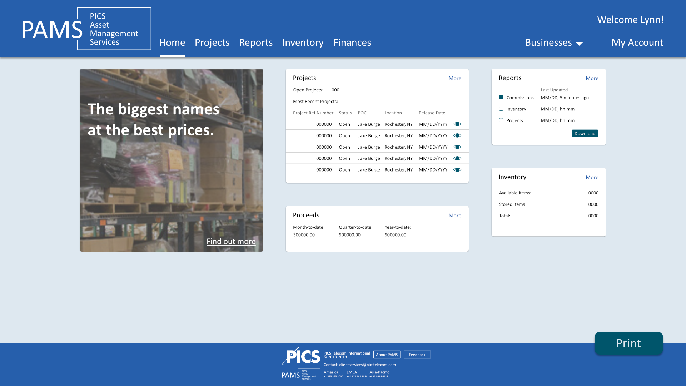

Overview
PAMS is a customer facing web application by PICS Telecom International that enables users to manage the deinstallation, storage, and resale of their redundant telecommunications network hardware. I was brought on as a UI Design intern in Summer 2018 to help the IT team make PAMS more appealing to PICS customers in both look and feel.
Problem
PAMS (PICS Asset Management Services) is supposed to help customers manage their redundant telecommunications hardware. It wasn't very helpful at doing that.

Process
After a meeting or two I had a better idea of what PICS customers actually did in PAMS. This was important to understand, as it allowed me to work with the users' needs in mind.
The IT team wasn't just giving PAMS a facelift, they were remaking the front-end from scratch. I suggested they use Google's Material Design system, as that would work well with their plans for using Angular. This also allowed them to have a design guide once my internship was finished, as the project was going to take longer than they planned to have me for.
Sketches

Sketching pages out allowed me to settle on some basic ideas for PAMS. Different operations were segregated into different cards, ensuring the user had what they needed for that task in one place.
Wireframes
Sketching pages out allowed me to settle on some basic ideas for PAMS. Different operations were segregated into different cards, ensuring the user had what they needed for that task in one place.
Design Iteration

Once I got branding requirements from marketing, I was able to switch to hifi wireframes. Working with cards allowed me to iterate quickly, so I stuck with hifi wireframes from here on.

As I received more feedback on what cards should do or what sections we planned to have, I iterated further. Cards got culled, combined, and redefined throughout this process.
Result
After the team and I settled on final designs, I helped implement the project in Angular on the dev environment. It was incredibly satisfying to see my design come to life.
What I Learned
This was my first experience in designing a product for real customers, for a real company. I learned a ton about the actual steps teams go through when starting a project. Before this, I didn't realize how difficult it could be to get good requirements from stakeholders and that having to secure meeting times slows down work much more than I thought it would. My biggest takeaway from this experience was that my work is worth the time and effort put into it.